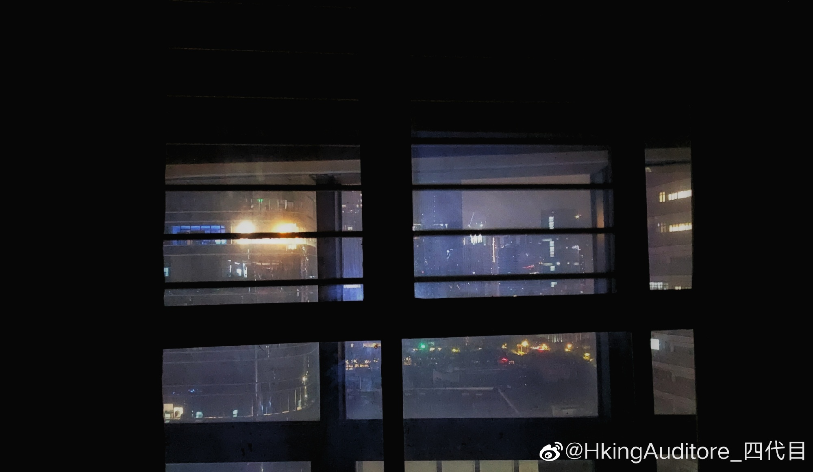

晚安
今天大概是我在赛百诺睡觉的最后一晚上了。
昨天搞卫生，今天搬东西，换次狗窝累得要半条命。
赛百诺其实算不上是什么好地方，除了离公司近我几乎都找不到它其他优点，高昂的物业水电费，不开门就没通风的空气，以及上半年时不时来一下全天候无休的装修，让我的住起来都有些狼狈。但有一点——至少是我选这套房子的重要理由——一直没辜负我，那就是这里的采光。能在周末做事的时候看到外面的阳光或是远处写字楼的霓虹，是我在深圳这个忙碌的城市里最后的妥协了。
来深圳有一年了，这个小卧室又奇妙地恢复了一开始的状态，一样的空空荡荡，不过我和一台笔记本电脑占点空间。作为一个依赖心理极强的人，廉价的不舍又开始泛滥。我太害怕熟悉的人事物或生活状态被改变了，也没有断舍离的勇气，以至于搬家的时候都会带上很多莫名其妙的东西——但现在我要丢掉这个房子了，或者更准确地说，是房子要丢掉我了，
虽然新房子已经是我能找到的最便宜的民房，但这个价格还是让我肉疼。我只能安慰自己说，反正我除了住房以外生活也基本没有别的花销了，暂且对自己好一些吧。虽然我还不知道那里会是什么样的生活，但至少我早上得早起十分钟了。
我一直想试试看像我曾经一个电脑桌面一样，上面是一个人看着城市的霓虹入睡。小时候我很怕黑，睡觉也要开着窗帘，他肯定会很喜欢这个房子；但这个霓虹对23的我来说实在是有些太刺眼了。
今天大概是我在赛百诺睡觉的最后一晚上了。
昨天搞卫生，今天搬东西，换次狗窝累得要半条命。
赛百诺其实算不上是什么好地方，除了离公司近我几乎都找不到它其他优点，高昂的物业水电费，不开门就没通风的空气，以及上半年时不时来一下全天候无休的装修，让我的住起来都有些狼狈。但有一点——至少是我选这套房子的重要理由——一直没辜负我，那就是这里的采光。能在周末做事的时候看到外面的阳光或是远处写字楼的霓虹，是我在深圳这个忙碌的城市里最后的妥协了。
来深圳有一年了，这个小卧室又奇妙地恢复了一开始的状态，一样的空空荡荡，不过我和一台笔记本电脑占点空间。作为一个依赖心理极强的人，廉价的不舍又开始泛滥。我太害怕熟悉的人事物或生活状态被改变了，也没有断舍离的勇气，以至于搬家的时候都会带上很多莫名其妙的东西——但现在我要丢掉这个房子了，或者更准确地说，是房子要丢掉我了，
虽然新房子已经是我能找到的最便宜的民房，但这个价格还是让我肉疼。我只能安慰自己说，反正我除了住房以外生活也基本没有别的花销了，暂且对自己好一些吧。虽然我还不知道那里会是什么样的生活，但至少我早上得早起十分钟了。
我一直想试试看像我曾经一个电脑桌面一样，上面是一个人看着城市的霓虹入睡。小时候我很怕黑，睡觉也要开着窗帘，他肯定会很喜欢这个房子；但这个霓虹对23的我来说实在是有些太刺眼了。
- 